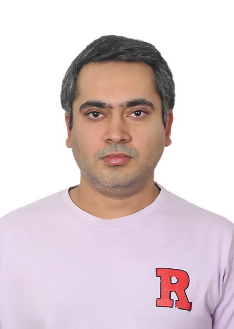
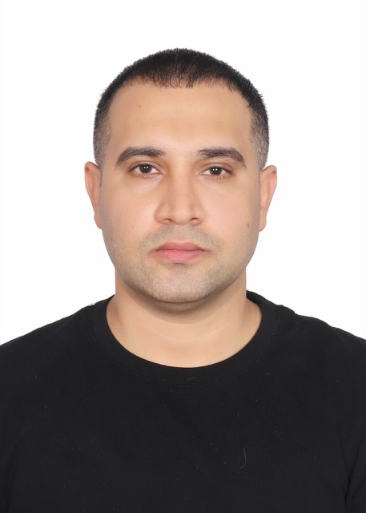

Process digitization
We map how work really flows, remove the manual steps and replace them with software your teams will use.
- Workflow and approval automation
- Document processing, AI-assisted where it helps
- Dashboards, audit trails and integrations
Befree Inc is a Canadian technology company. We turn manual processes into digital ones, migrate legacy systems to modern platforms and run outsourced engineering, while building and operating product modules of our own.
One company for the whole move: redesign the process, migrate the system and keep it running.
We map how work really flows, remove the manual steps and replace them with software your teams will use.
We move ageing applications, data and infrastructure to modern platforms in controlled phases.
Hand us a system, a programme or a workstream. We own delivery against agreed outcomes.
The business keeps running while we move it. Each phase is tested, reversible and signed off before the next.
Befree Inc owns its products and the modules inside them. We ship, secure and scale our own software, and we run client programmes with the same discipline.
A personalized food and nutrition app. BeFree builds a profile from your health goals and dietary needs, scans products, flags ingredients and allergens that matter to you, and guides smarter grocery choices.
Under the hood: Claude-powered analysis, Node.js and MongoDB services on AWS.
Visit befree.fit →Registration, secure sign-in and device-based session management.
Structured user profiles that drive personalized results.
Product search by name or barcode with AI-powered analysis.
Search history, usage analytics and feedback loops.
Our next product, currently under construction at jobpulse.work. Details will be published here at launch.
These results come from our founder's earlier roles and consulting work, before and alongside Befree Inc. They are not Befree Inc client engagements.
Kafka throughput across 13 topics with no added infrastructure, 99.95% uptime, AWS costs down 22%.
OnGrid · full-time roleGPU servers needed for the same output, as the platform grew to US$2M ARR.
Dresma · full-time roleOrders a day scaled with the same small team.
Lenskart · full-time roleActive RFID worker-safety system architected and running live.
Maruti Suzuki India · technical advisorAlso: first engineer at Gigforce (team grown from 1 to about 15); multi-tenant POS across 700+ retail locations at SignCatch and Walmart KDP. Full history at vipan.me.
Clear ownership, measurable milestones and no big-bang cutovers.
Inventory processes, systems, data and risks. Agree what success is worth.
Target architecture, migration waves and a rollback path for each.
Move in phases, run old and new in parallel and reconcile data before cutover.
Run it as your outsourcing partner, or hand over with documentation and training.
A defined migration or digitization programme with agreed outcomes.
An outsourced engineering team that integrates with yours.
Fractional CTO, architecture review and due diligence.
Founder and CEO, Befree Inc
Software architect and fractional CTO with 15+ years building and scaling SaaS and enterprise platforms, still hands-on in production code. Vipan has led engineering at product companies including OnGrid, Dresma, Lenskart and Gigforce, advised Maruti Suzuki India on plant safety systems, and founded Befree Inc to build products of his own.
Based in Ontario, in the Greater Toronto Area. Works with clients across Canada, the United States and India, supported by delivery partner Anvira Labs.

Karandeep BhallaCo-Founder & CMO
Inderneel BhallaCo-Founder & BDO Amit SihiCo-Founder & COO
Amit SihiCo-Founder & COOBefree Inc is a Canadian technology company. We digitize business processes, migrate legacy systems to modern stacks and provide managed engineering outsourcing, and we own and operate our own products, including the BeFree food and nutrition app.
We move in phases. Each wave has a target design and a rollback path, old and new systems run in parallel where needed, and data is reconciled before cutover.
Yes. We run defined programmes, managed engineering teams and application support, with agreed outcomes and clear ownership.
We are based in Ontario, Canada, in the Greater Toronto Area. We serve Canada, the United States and India, with delivery supported by our partner Anvira Labs.
BeFree is a personalized food and nutrition app that we own. It builds a profile from your health goals and dietary needs, scans products and flags ingredients and allergens that matter to you. Learn more at befree.fit.
Email info@befreefit.ca or book a call. We begin with an assessment of your processes and systems to agree scope, risks and phases.
Share the process or system you want to move. Our engineering leadership will review it with you.